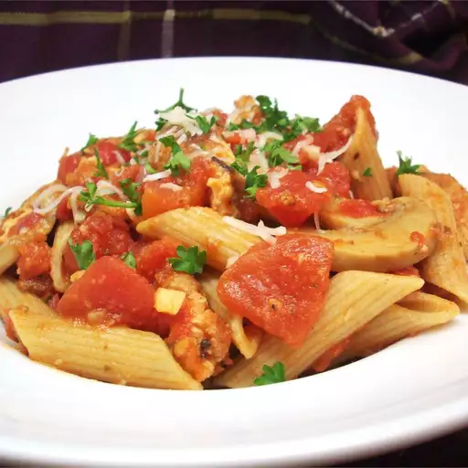

Home

Brooklyn Girl's Pasta Arrabiata
One thing I learned in my years living in the Canarsie section of Brooklyn, NY was how to cook a good Italian meal. Here is a recipe I created after having this dish in a restaurant. Enjoy!
Ingredients
- Olive Oil
- Garlic
- Red Pepper Flakes
- Canned Tomatoes
- Basil
- Penne Pasta
- Salt
Steps
- Heat 1/4 cup of olive oil in a large skillet over medium heat. Add the garlic, and saute for a few minutes. Sprinkle in the red pepper flakes, and saute for another minute. Pour in the diced tomatoes and tomato sauce, and add the basil. Simmer for about 20 minutes, stirring occasionally.
- Meanwhile, bring a large pot of lightly salted water to a boil. Add penne pasta, and cook for 8 minutes, or until tender. Drain.
- In a small bowl, whisk eggs with a fork. Place bread crumbs in a separate bowl. Stir the garlic powder, salt and pepper into the bread crumbs. Dip chicken cutlets into the egg, then press into the bread crumbs until completely coated.
- Heat remaining olive oil in a large skillet over medium heat. Fry chicken for about 5 minutes per side, or until the coating is a nice dark brown color.
- Remove chicken, and cut into slices. Toss the chicken slices into the sauce, and simmer for about 10 minutes. Stir in the cooked penne, simmer for a few more minutes to soak up the flavor, then serve.